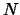
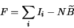
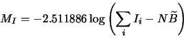
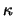
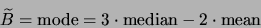
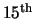

The basic funtion of the aperture photometry routine in GCX is to measure the flux of a number of stars in the image (which will be expressed as an instrumental magnitude), and estimate it's expected error.
As an additional function, if some of the stars are standard stars of known magnitude the program will calculate the standard magnitude of the measured stars using the standard stars as a reference (ensemble photometry).7.1
To measure the flux of a star, we add together the intensity values from a circular region around the target star (the central aperture), and subtract the estimated background contribution. The background is estimated from values in a annular region surrounding the star at a distance.
Normally, we choose the size of the central aperture to be large enough to include most of the star image. Common ranges are between 3 and 5 times the FWHM of the star image.7.2
The annular sky aperture is chosen to be far enough from the star so that it includes an insignificant amount of flux from it. The default values of the measurement aperture radiuses are 6 pixels for the central aperture and 9/13 pixels for the sky aperture. These values are appropiate for star images between 2.5 and 3.5 pixels FWHM. If one obtains consistently tighter star images, reducing the central aperture would help improve the SNR of faint stars. The three radiuses are specified by options under Aperture Photometry Options.
Assuming there are  pixels inside the central aperture, the total
flux (star + background) is:
| (7.1) |
|  | (7.2) |
|  | (7.3) |
The estimated error of the instrumental magnitude is calculated taking most known random error sources into account. A detailed description of the error model and the way the instrumental magnitude error is calculated can be found in Appendix A.
To calculate the instrumental magnitude above we used an estimate of the sky background near the star. This value is calculated from the pixels in the annular ring.
Given the relatively large size of the sky annulus, it is very likely that we will find unwanted stars in at least some of the annuli. We must therefore use a robust algorithm to obtain the expected sky value.
The program offers a number of algorithms: average, median,
mean-median, - and synthetic mode. The first four
are described in Section 6.5.
and synthetic mode. The first four
are described in Section 6.5.
It is generally not recommended to use average, as it is not robust. The others, while not having a problem with robustness, will not produce the best estimate (which is the mode7.3 of the sky annulus pixel values) when the distribution of the sky values is skewed. In this case (which arises whenever the sky level is relatively low), the synthetic mode is the best algorithm. The synthetic mode is calculated as follows:
The histogram of the sky values is created. Then, the histogram is
clipped using a - algorithm in order to eliminate
the effect of unwanted stars and other defects. The mean and median of
the clipped histogram are computed, and the synthetic mode is defined
as:
algorithm in order to eliminate
the effect of unwanted stars and other defects. The mean and median of
the clipped histogram are computed, and the synthetic mode is defined
as:
|  | (7.4) |
The desired sky estimation algorithm is selected by the Aperture
Photometry Options/Sky method option. The rejection band for the
mean-median, - and synthetic mode algorithms is set by
Aperture Photometry Options/Sigmas. It is recommended that a
relatively low value is used for this option, to make sure we have a
good outlier rejection.
and synthetic mode algorithms is set by
Aperture Photometry Options/Sigmas. It is recommended that a
relatively low value is used for this option, to make sure we have a
good outlier rejection.
In GCX all photometry targets are specified using their world coordinates (right ascension, declination and epoch). The targets and standards are generally taken from a particular star file called a recipy file. The WCS of the frame is fitted, then the coordinates of the standards and targets are transformed to frame coordinates. The resulting positions are used as initial positions for the measuring apertures.
If the Aperture Photometry Options/Center apertures option is set the program will try to detect stars in the immediate vicinity of the initial positions, and center the apertures on the detected stars. The maximum distance from the initial position to the detected star is specified by Aperture Photometry Options/Max centering error. If this value is exceeded, the star is marked with the not found flag and the aperture is not moved. Otherwise it is marked with the centered flag.
If the apertures were centered, the amount by which each star was moved is indicated by a line extending from the center of the star symbol in the direction in which the star was moved. The length of the line is a factor of Star Display Options/Plot error scale longer than the star's displacement.
If we have the instrumental magnitudes of the target stars and at least one standard star, we can calculate the standard magnitude of our targets7.4 by simply adding the standard magnitude to the difference in instrumental magnitudes between the target and the standard. This is the simplest form of differential photometry.
We can however obtain significant advantages using more than one standard in the reduction:
We try to find the best estimate of the frame zero point, i.e. the value which is added to the instrumental magnitudes to obtain standard magnitudes. If we had no errors, all the standard stars' instrumental magnitudes would differ from their standard magnitudes by exactly the zero point value. This of course is never the case in practice. The differences will be dispersed above and below the zero point. We call the difference between a standard star's standard magnitude and the sum of it's instrumental magnitude and the zero point the star's residual.
We want to choose the zero point is such a way that the residuals are minimised. More specifically, we try to minimize the sum of the residuals' squares. It is easy to see that the residuals' sum of squares is minimised if the zero point is chosen so that the average of the residuals is zero.
There are two problems with this approach: First, by using many standards, we have a good chance that a few of the have ``bad'' values. They could be affected by a cosmic ray hit or a speck of dust that wasn't there when the flat was taken, or the catalog value may be in error. Or one of the standards may turn out to be variable. Secondly, if we use both bright and faint standards, the errors of the brighter ones are known to be lower. We would like the faint stars to have less influence on the resulting zero point than the bright ones.
The algorithm used takes care of both these problems. It assigns weights to each standard star according to it's estimated error, and iteratively downweights stars that have residuals that are larger than expected. For a detailed description, see Appendix B.
The algorithm produces it's best estimate of the frame's zero point, and a ``diagnostic'' value called the mean error of unit weight, usually abbreviated to meu or me1. The mean error of unit weight is a number that shows how well the spread of the residuals matches the estimated errors. It should have a value close to unity. A larger value shows that we have some error sources we didn't take into account. A consistently smaller value indicates that our error estimating parameters are overrated, and the estimated errors are too large.
Finally, the standard magnitude of the target stars is calculated by adding their instrumental magnitude to the estimated zero point. The error is the quadrature sum of the target's instrumental magnitude error and the zeropoint error.7.5
The instrumental magnitude obtained is given the name of the filter the frame was taken with. The filter name is obtained from the FILTER field. If the field is not present, or the Aperture Photometry Options/Force iband option is set, the filter name is taken from Aperture Photometry Options/Instrumental band. If any pixel within the central aperture exceeds Aperture Photometry Options/Saturation limit the star is marked with the bright flag.
Relevant information from the fits header and recipy header is carried on to the observation report. The fields include:
| object | the name of the target object, taken from the fits header or recipy. |
| ra, dec | World coordinates of target object. |
| equinox | Equinox of world coordinates and star coordintes in the report. |
| mjd | Modified Julian Date of integration start from JDATE or MJD fits fields. |
| exptime | Integration time from the EXPTIME field. |
| airmass | Frame airmass, from either the AIRMASS field or calculated from the geographical coordinates and time. |
| aperture | Telescope aperture from the APERT field. |
| telescope | Telescope name from the TELESCOP field. |
| filter | Filter used from the FILTER field or as set by the user. |
| latitude | Location of the observing site from the LAT-OBS field. |
| longitude | Location of the observing site from the LONG-OBS field. |
| altitude | Altitude of the observing site from the ALT-OBS field. |
| observer | Name of observer from the OBSERVER field. |
| sequence | A string describing where the sequence in the recipy originated, from the sequence field of the recipy. |
To run the aperture photometry routine on a frame, load the frame into gcx (File/Open Fits), then load a recipy file or another star file that contains standard and target stars.7.6
Then fit the frame's WCS using Wcs/Auto Wcs and finally run the aperture photometry routine with Processing/Aperture Photometry to File. A report file will be created, that lists all the standard and target stars with their instrumental and standard magnitudes, general information about the frame and fit information. More details about the report format can be found in Appendix C.
When reducing a large number of frames, it is more convenient to invoke GCX from the command line, perhaps from a script. To reduce frame frame.fits using the recipy file vs.rcp and append the format at the end of the rep.out file, we can use:
gcx -P vs.rcp -o rep.out frame.fitsIn addition, if we have a master dark frame mdark.fits and a master flat frame mflat.fits, we can combine CCD reduction for the frame with the aperture photometry, like this:7.7
gcx -d mdark -f mflat -P vs.rcp -o rep.out frame.fitsAperture photometry reports from several frames can be combined by simply concatenating the files together. The combined file can be used for further refining the data reduction with the multi-frame reduction routine (Chapter 8).
Selected information from the (combined) report file can be set out in a tabular format using the report converter function of GCX. The format of the table is specified in the File and Device Options/Report converter output format option. Possible values for the format are described in Appendix E and the on-line help. After setting the format,7.8 invoke the report converter using:
gcx -T rep.out -o rep.txtWhich will convert the report file rep.out to a table named rep.txt.
Having a recipy file is central to running aperture photometry in GCX. Fortunately, creating one is relatively straightforward.
Let's create a recipy file for the uori-v-001.fits.gz frame, which is included in the GCX distribution. Open the frame and match the WCS (using Wcs/Auto Wcs). The WCS matching command leaves the GSC field stars and the detected stars visible.
First, we add our target: select Stars/Add from Catalog, and enter it's name at the prompt (uori). An object symbol will appear on the screen (around the bright star near the center, which is U Orionis). Select it, and bring up the star editing dialog using Stars/Edit or right-click on the star and select Edit Star from the pop-up menu. Change the star's type to ``AP Target'' and click Ok. The symbol on the image should change to a big cross, indicating the star is a target.
If we don't have GCVS installed, we can identify the star from a star chart and edit a field star or even a detected star and make it the target. We normally want to change the star's name to something descriptive and check that the coordinates are correct.
If there is no star at the desired position (which can happen if we prepare a recipy for a very faint variable), just edit any star, change the coordinates to the desired ones and the type to target. A recipy can have any number of targets; more can be added in the same way.
Now we need some standard stars. If we have a chart we want to use as the base of the recipy, we can create it on-screen similarly with the target (by editing field stars). The difference is that the standards are marked as ``Standard Star'', and we need to enter their standard magnitudes. Several magnitudes can be entered in the ``Standard magnitudes'' field of the edit dialog. A magnitude is given as:
whereband
(source)=
| v(aavso)=12.5 | A typical example for a value taken from a paper aavso chart; the error is unknown. |
| v=12.53/0.05 ic=11.2/0.03 | A star for which we know the magnitudes in two bands. |
| b=13.2 v=12.7/0.1 r=12.2 | We know three magnitudes, but only one error. |
Another way to get standard stars is to use the tycho catalog. Remove all field stars, then select File/Load Field Stars/From Tycho2 Catalog. The Tycho stars will show up as field stars. All we have to do is to mark the ones that we want to use as standards.
Now we can finally create the recipy file. Select File/Create Recipy and enter a recipy name (or press the ``...'' button and select a file name). Then select which stars we want to include in the recipy file. We will most certainly want the standard and target stars, but we may include objects and field stars to be used for WCS matching if we envision using the recipy on a machine that doesn't have catalogs installed.
To verify our newly created recipy, remove all stars (Stars/Remove All) and load the file we just created (using File/Load Recipy). Run the photometry routine (Processing/Aperture Photometry to File) and check the output.
In the above examples, we have used a frame of the field as a backgound on top of which we loaded the stars. This is not required. If we select Stars/Add from catalog without having a frame loaded, the program will create a blank frame with the size set by File and Device Options/New frame width and height, and set it's WCS with the center of the frame pointing at the selected object, and the scale as set by File and Device Options/New frame scale.
If we want to create many recipies at a time, it can be more convenient to use the command line. To create a recipy from the Tycho2 catalog, use:
gcx -make-tycho-rcp 20 -j uori -o uori.rcpThis will create a recipy using Tycho stars situated within a 20 minutes radius from U Orionis and save the result to uori.rcp.
If we have a sequence file in a format supported by GCX , such as the ``.dat'' files made available by Arne Henden at:
ftp://ftp.nofs.navy.mil/pub/outgoing/aah/sequenceit can be converted to a recipy file using the following command:
gcx -import henden <uori.dat -mag-limit 15 |The first part of the command reads the uori.dat file and converts it to a GCX star file, keeping only stars brighter that the  magnitude, and writes the star file to the standard output. The second parts of the command reads the the file from the standard input, adds ``uori'' as a target, and writes the resulting rcp file to uori.rcp.
gcx -p - -set-target uori >uori.rcp